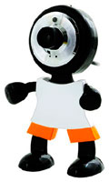

Как выбрать и как правильно пользоваться веб камерой.

Веб камера – устройство, предназначенное для передачи фото и видео изображений по средству Интернета, например через скайп и другие подобные приложения. Существует большое количество видов и типов веб камер. Различаются они по разным критериям: по качеству изображения, по размеру изображения и другим критериям. Самые распространенные марки: web камера logitech, web камера genius, web камера asus.
Web камера logitech – одна из самых распространенных торговых марок ваб камер. Существует множество типов данного продукта. Рассмотрим характеристики на примере web камеры Logitech C210. Данная камера обладает расширение 640х480, камера крепится к самому монитору, разрешение такой камеры достигает 0,3 мегапикселя, объектив обладает фокусом, скоростью воспроизведения равна 60 кадров в секунду, так же в камеру встроен микрофон с системой шумоподавления. Такая камера стоит всего 1000 рублей.
Web камеры Asus – не столько распространенная торговая марка по сравнению с предыдущей. Однако, веб-камеры данной фирмы ни в чем не уступают другим. К примеру, ASUS DC-3120, разрешения такой камеры так же 640х480, так же камера обладает функцией автофокуса, есть возможность записи фото и видео, разрешении так 0,3 мегапикселя, скорость воспроизведения кадров 60 кадров в секунду. Такая камера в среднем стоит так 1000 рублей. Единственный минус такого гаджета в том, что его невозможно прикрепить к корпусу монитора.
Web камера Genius – самая распространенная торговая марка, предоставляющая огромный выбор периферии когда надо
купить компьютер в Минске. К примеру, веб камера Genius VideoCam NB является ярким примером технических достижений данной компании. Возможности у этого продукта велики, разрешение данной камеры 1024х768, качество 1.3 мегапикселя, такие камера готова записывать, видев в AVI в MPEG формате, фото в HD формате. Однако скорость всего 30 кадров секунду, а радиус обзора равен 52. Удобность этой камеры заключается в том, что эта камера очень легкого веса, так же эту камеру возможно использовать в качестве охранного устройства благодаря ее компактности и способности крепиться к любому предмету.
Драйвера для web камеры используются для точной и правильной работы гаджета. Для каждой марки существуют свои драйверы и способы установки. Обычно драйвера поставляются производителями веб камер.
Чаще всего веб камеры используются для общения через интернет ресурсы. Но в наше время веб камеры используются в большинстве современных видеоиграх, к примеру, для того чтобы видеть своего оппонента во время игры. Это добавляет остроты ощущений. Так же камеры используются в охранных системах. Компании используют их для наблюдением за происходящим на территориях их помещения.
Следующая статья:
Как выбрать жёсткий диск?